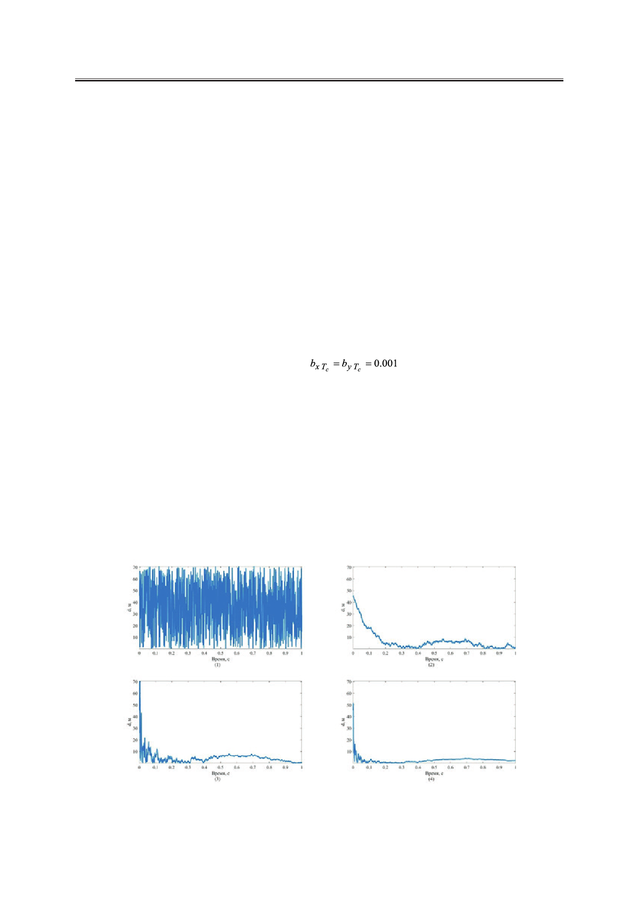

Б.А. Заикин
Параметры охранной системы и объекта наблюдения. Зададимся некоторыми
конкретными исходными параметрами охранной двухпозиционной радиосистемы коор-
динатометрии и объекта наблюдения. В процессе моделирования будем менять некото-
рые из них, оценивая при этом показатели качества и, таким образом, определяя влияние
конкретного параметра на эти показатели качества.
Период следования импульсов брали равным Tc =0.001 с. При этом время наблюдения
было ограничено tнабл.= 1 с, и, соответственно, ограничено количество тактов n = 1000. Ши-
рина спектра зондирующего сигнала составила 1 ГГц, а ОСШ = 0 дБ. Отсюда среднеква-
дратическое отклонение составило στ = 10-9 с. Размеры антенной решетки брали 10 на 10
элементов, так что общее число N = 100. Значения σβ принимали одинаковыми и равными
0.9 градусов. Начальные координаты объекта наблюдения выбирали из условия, что ОН в
начальный момент находится на расстоянии R(1) = 1500 м от охранной системы, а угол β(1)
= 45°. Следовательно, начальные координаты ОН по осям X, Y составили x(1) = y(1) = 1061 м.
СКО траекторных флуктуаций за интервал наблюдения 1 с (соизмеримый с интервалом
корреляции) считали одинаковыми и равными bx = by = 1 м. Таким образом, получаем
СКО флуктуаций траектории за один такт
м.
Полученные результаты
На рис. 2 приведены графики расстояния между истинным значением и оценёнными
значениями (31) в зависимости от времени при фильтрации различными фильтрами с
использованием указанных выше параметров. Для всех типов фильтрации взяты одина-
ковые исходные данные движения ОН.
Остальные результаты моделирования представлены в виде таблицы. В ней указыва-
ется тип фильтрации; после чего следует параметр охранной системы или ОН, значение
которого было изменено, при этом остальные параметры соответствуют типовому зна-
чению; затем следуют полученные численные оценки (32)–(34). Данные получены как
усреднённый показатель по 10 реализациям.
Рис. 2. Результаты работы различных типов фильтрации при одинаковых исходных параметрах.
(1) – СКО при оценке; (2) – СКО при фильтрации Винера при K0 = 0.01;
(3) – СКО при α – β фильтрации; (4) – СКО при фильтрации Калмана.
Российский технологический журнал 2017 Том 5 № 5
21